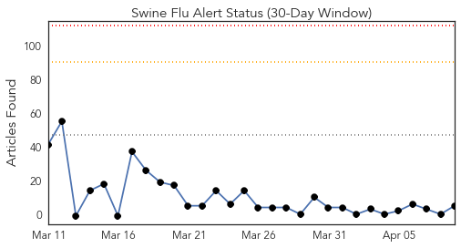
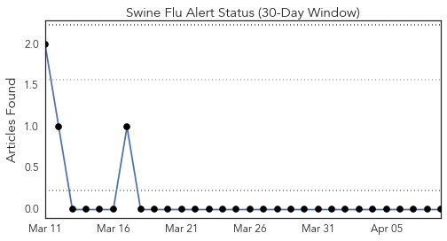
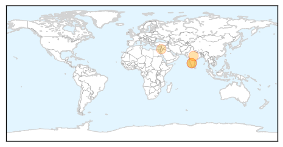
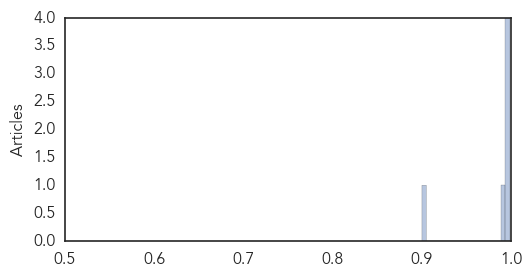

Toggle navigation
Early Warning
Daily Alerts
Swine Flu
Apr 09, 2015
Compare to:
-
Dengue Fever
Hemmorhagic Fever
Mold/Fungal Infection
Influenza
Meningitis
Pertussis / Whooping Cough
Middle East Respiratory Syndrome
Cholera
Hepatitis
Chikungunya
Yellow Fever
Bubonic Plague
West Nile Virus
Ebola
Measles
Unknown
Mumps
30 Day Trends
Web: 0
alerts
, 0
warnings
Twitter: 0
alerts
, 0
warnings
Top Articles:
0.998
6 More Swine Flu Deaths, Toll Touches 2,159
0.998
6 more swine flu deaths, toll touches 2,159
0.996
Help Desk removed after decline of swine flu patients
0.996
6 more swine flu deaths toll touches 2159
0.993
Untitled Article
0.900
‘Health precautions required as drastic temperature drop expected’
Top Tweets:
No tweets found for Apr 09, 2015
Web/News Articles

Tweets

Article Locations

Article Confidences
